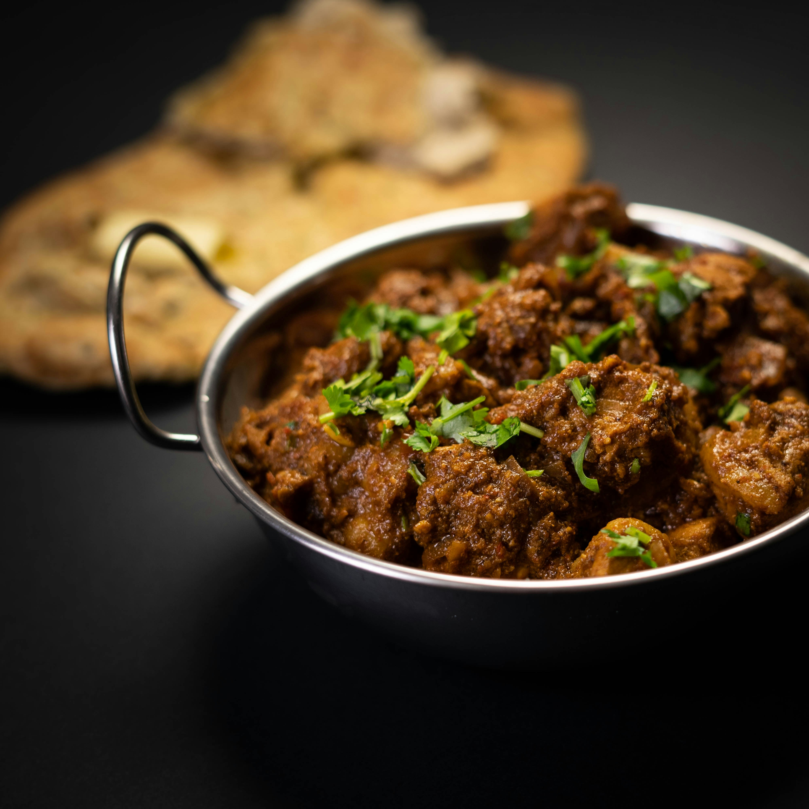

Home
Kerala Beef Curry

Description
This beef curry uses roasted curry powder.
Submitted by Margaret Thomas
Ingredients
- 3 pounds beef stew meat, cut into 1 inch cubes
- 1 (1 inch) piece fresh ginger root - peeled, sliced and crushed
- 3 ½ tablespoons white vinegar
- 1 tablespoon ground black pepper
- 1 tablespoon curry powder, toasted
- 1 ½ tablespoons cayenne pepper
- 4 green cardamom pods
- 1 cup thick coconut milk
Steps
- Rinse the beef and pat dry. Crush the garlic cloves into a paste and combine it with the crushed ginger.
Add the vinegar, salt, pepper, roasted curry powder, and cayenne. Mix in the beef cubes and toss to coat.
Set aside for 30 minutes.
- Heat the oil in a Dutch oven over medium heat. Add the curry leaves and pandan strips. Stir in the onions.
Cook, stirring frequently, until the onion has softened and turned translucent, about 5 minutes.
- Mix in the beef cubes and cook until browned on all sides, about 10 minutes. Stir in the cinnamon stick,
cardamom pods, and cloves. Add the tomato paste and water and mix well.
- Simmer, covered, on low heat for 1 1/2 hours or until the meat is tender. Check the curry every half hour;
you may need to add more water (up to 1 cup) if the curry is too dry and is sticking to the pan.
- Add the coconut milk and heat through. Taste and adjust the seasonings before serving.